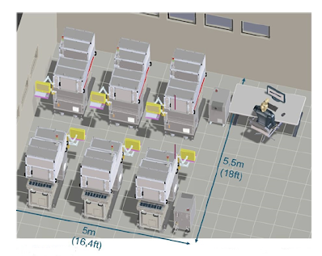
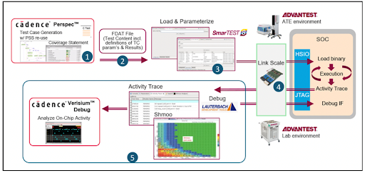

This article is excerpted from an article that appeared in the July/August 2023 issue of Chip Scale Review. Adapted with permission. Read the original article here, p. 28.
By Adir Zonta, Product Marketing Manager, V93000 Engineering Solutions, Advantest
Test data volumes are exploding as the number of transistors per chip increases along with the number of test vectors needed to test each transistor. A recent article [1] described how traditional methods of device validation and characterization, ATE structural and functional test, and system-level test no longer suffice due to increased device complexity, and introduced innovations in pre-silicon verification, first silicon bring-up, and post-silicon validation (PSV) that are necessary to meet today’s challenges.
This article looks further at these innovations and the systems necessary to implement them, including how to equip an engineering lab with automated parallel test stations to speed up test engineering tasks such as pattern validation. It also describes how a new standard helps bridge the gap between electronic design automation (EDA) and ATE and how Cadence and Advantest have collaborated on an initiative to put the standard into practice.
Test-pattern validation
One of the challenges that the explosion in test data imposes on test engineering is the ever-lengthening time required for test-pattern validation, which is impacting time to market. Test-pattern validation determines whether the patterns are generated correctly, that the expected responses are accurate, and that they have enough margin to account for parameter variations (for example, in voltage and frequency) in production.
**Generating test patterns **
The test patterns include structural scan patterns generated by automatic test-pattern generators or functional test patterns generated manually from a test specification or automatically using random or constraint-based test-generation methods or other techniques linked with EDA tools. Test patterns from the EDA tools are generally in a standard format such as STIL (Standard Test Interface Language) or WGL (Waveform Generation Language).
Structural test patterns target specific fault models, such as “stuck at” faults or timing faults, whereas functional test patterns confirm the performance of the device under test (DUT) in its end use. Functional test vectors are particularly important in automotive and other industries where performance and safety are critical. The key aspects of generating test patterns are summarized below.
Cyclized test vectors. The patterns in STIL or WGL from EDA tools are converted to cyclized test vectors for the target ATE system by adding timing and control information to synchronize the patterns with a specific ATE system’s clock and control signals. This can require extensive development time.
Error causes. Inevitably, the cyclized test vectors will experience errors resulting from design defects percolated through the cyclization process, the cyclization process itself, or corner cases that the original design did not take into account. Regardless, the PSV process must identify and correct any errors.
Correcting test-pattern errors. When errors are detected during the pattern validation process, they must be corrected through manual or a combination of manual and automated methods.
Automated parallel test stations speed up the process
Speeding up test pattern generation requires a test lab with the equipment necessary to run parallel pattern validation, minimizing the time spent on pattern debugging while assuring sufficient test coverage. A solution such as the Advantest V93000 EXA Scale EX Test Station, an engineering platform for complex device bring-up that supports structural and functional test, provides this parallel test capability without requiring a lot of floor space because it is designed to fit under the company’s single-site M4171 automated handler. Complete with integrated active thermal control (ATC) over a range of -45 to +125°C, the handler brings automated device loading, unloading, and binning into the laboratory environment. As shown in Figure 1, six test cells can fit within a 5m by 5.5m laboratory space.
Figure 1: Six EX test stations with M4127 handlers in a 5m by 5.5m laboratory space can speed up test-pattern validation and other engineering tasks.
There are two primary challenges involved in creating functional test on ATE:
- The need to convert the functional test content into a production test vector pattern, which requires tooling and extensive development time.
- Typically, there is no native software debugging environment on a typical tester, making it very difficult for the test case developer to debug any issues in support of the test engineer. Excessively long, unpredictable debug cycles are inevitable.
Pre-silicon methodologies and an ATE instrument can work together to seamlessly and interactively validate the functional test content to help to meet these challenges.
PSS links EDA and ATE
Reuse of pre-silicon verification test content can ease the transition from the pre-silicon verification stage to first silicon—including bring-up, bare-metal test execution, and ATE stage. To that end, the Accellera Systems Initiative, an organization focused on the creation and adoption of EDA and intellectual property (IP) standards, has developed the Portable Test and Stimulus Standard (PSS), which specifies a single representation of stimulus and test scenarios that span simulation, emulation, and post-silicon [2].
PSS enables the once-siloed EDA and ATE disciplines to work together. However, while structural test dominates the ATE side, rising quality expectations are driving a need for more functional test to ensure the chip will perform properly in its end-use mode. However, as previously mentioned, converting functional test content into production test vectors requires extensive development time, and a typical ATE system lacks a native software debugging environment that could speed up the process [3].
Joint EDA-ATE PSS implementation
A joint cooperative initiative between Cadence and Advantest involved a combination of the PSS and HSIO approaches. The companies have developed a solution that involves PSS-based test content creation, an interface to ATE software, the loading of parameterized test content, test execution on ATE hardware, and debug and analysis (Figure 2). The Cadence Perspec System Verifier automates the process of extending the PSS models used in pre-silicon validation to the ATE environment, reducing the complex use-case scenario development time. A container file labeled FDAT in Figure 2 provides an efficient interface between Perspec and the Advantest SmarTest 8 software for its V93000 ATE systems.
Advantest’s Link Scale ATE instrument interacts natively with the DUT using low pin-count HSIO, such as USB and PCI Express interfaces running in full-protocol mode, without pattern cyclization. Collected test traces can be viewed in a SmarTest viewer or imported into Cadence’s Verisium Debug AI-powered debug tool for correlation with the original PSS tests. In addition, Link Scale can host embedded software debuggers such as the Lauterbach TRACE32.
Figure 2: PSS enables interfacing of EDA and ATE to optimize test validation.
Device validation best practices
Going forward, one key will be smoothing the transition from the lab environment with engineering test stations to the production floor. The single-load-board strategy, in which a multisite load board for high-volume production can be used in the lab with only a single site enabled, makes it unnecessary to develop one board for engineering activities and another for high-volume manufacturing (HVM).
The engineering environment should be as close as possible to the HVM environment. The EX Test Station achieves this goal because it uses our Xtreme Link technology, designed to provide high-speed optical data connections, embedded computing power, and card-to-card communications for high-volume production ATE. The station is also suitable for testing initial engineering batches efficiently. In addition, it helps to ensure seamless flow between the engineering and HVM environments.
Conclusion
The semiconductor industry has a long and successful history of testing increasingly complex devices, continually enhancing structural, functional, and system-level test to minimize test escapes. Advances continue as the industry contends with an exploding amount of test data necessary for silicon bring-up, PSV, and other test engineering tasks. A key innovation is a laboratory equipped with engineering workstations that can operate in parallel to speed up tasks such as pattern validation. In addition, EDA and ATE companies are cooperating to leverage standards such as PSS to bridge the pre- and post-silicon verification stages, and they are leveraging HSIO to allow ATE to apply test patterns without cyclization. Finally, engineering workstations are incorporating the load-board, compute, and communications technologies of production ATE systems, thereby speeding the transition from the lab to HVM.
References
- D. Armstrong, “Device validation: the ultimate test frontier,” Chip Scale Review, Nov-Dec. 2022, p. 26.
- “Accellera Board Approves Portable Test and Stimulus Standard 2.0,” Accellera Systems Initiative, April 14, 2021.
- M. Rubin, A. Zonta, Pre and Post-Silicon Verification Have Never Been Closer! Leveraging Portable Stimulus for Automatic Test Equipment (ATE),” Cadence Design Systems Inc., May 4, 2023.
